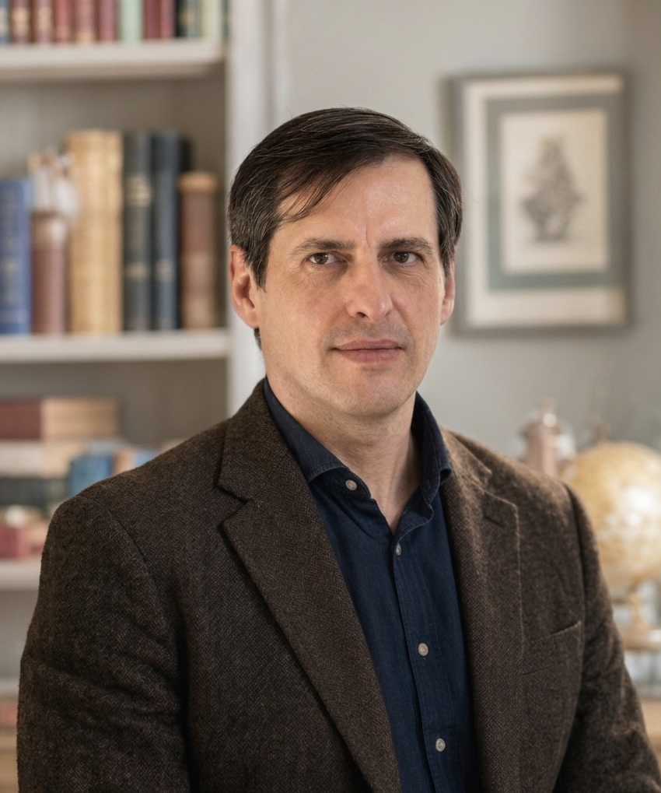

Research in algebraic geometry and topology, motivic homotopy theory, algebraic K-theory, homological algebra, category theory, ring and module theory.

I am a mathematician working in motivic homotopy theory, algebraic K-theory, (non-commutative) algebraic geometry, and topology. My research is centered on the homotopy-theoretic and categorical structures underlying algebraic varieties, non-commutative algebras and their associated invariants. In particular, I am interested in the interactions between stable homotopy theory, algebraic K-theory, and higher categorical methods.
A major theme of my work is the development of explicit models and constructions in stable motivic homotopy theory, especially through framed correspondences, motivic spectra, and spectral categories. My recent research has focused on framed motives, K-motives, algebraic Kasparov K-theory, and reconstruction problems in motivic homotopy theory. I am also interested in enriched category theory and its applications to triangulated and motivic categories.
My earlier work focused on the model theory of modules and the structure of the Ziegler spectrum, with particular emphasis on pure-injective modules, definable categories, and the interplay between algebraic and categorical methods in ring and module theory, as well as in representation theory.
I received my PhD in 1999 and my Doctor of Sciences (DSc) degree in 2010. I am also a Fellow of the Higher Education Academy.
Department of Mathematics
Swansea University
Fabian Way
Swansea SA1 8EN
United Kingdom
g.garkusha "at" swansea.ac.uk